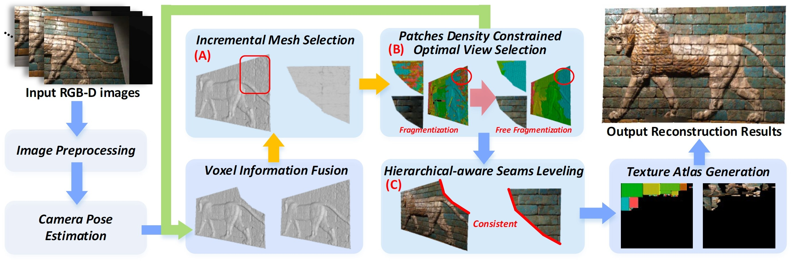

We propose a texture-mapping-based online RGB-D reconstruction framework that can generate stable and high-fidelity texture results in near real-time. Different from previous texture generation methods that are prone to output blur results (point blending methods) or require huge computational costs (previous texture mapping methods), our approach achieves high-fidelity and fast texture generation by introducing a new patches density regularization and a series of lightweight optimization methods. The patches density regularization addresses a universal but widely neglected problem: the texture patches fragmentation, which causes discontinuous seams and worsens texture results. By adding this regularization to the optimization process, the fragmentation can be effectively alleviated. To maintain high performance, we design lightweight optimization methods to significantly reduce the computational cost during texture generation. An incremental texture update strategy removes redundant triangular mesh, and a hierarchical-aware seam leveling reduces the number of optimization objects by utilizing light-varying smooth features. Furthermore, the enhanced voxel representation ensures the continuity and stability of the global texture results. Extensive experiments demonstrate that our method achieves a state-of-the-art level, even compared to the mainstream online and offline RGB-D reconstruction frameworks.

Fig 1. Our Pipeline.
Fig 2. Reconstruction results.
Fig 3. Reconstruction results.
Fig 4. Reconstruction results.
Xinqi Liu, Jituo Li, Guodong Lu. "Generating High-fidelity Texture in RGB-D Reconstruction using Patches Density Regularization". CAD 2023.
@InProceedings{Liu2023RealTexture,
author = {Xinqi Liu, Jituo Li, and Guodong Lu},
title = {Generating High-fidelity Texture in RGB-D Reconstruction using Patches Density Regularization},
booktitle = {Computer Aided Design (CAD)},
year={2023},
publisher={IEEE},
}